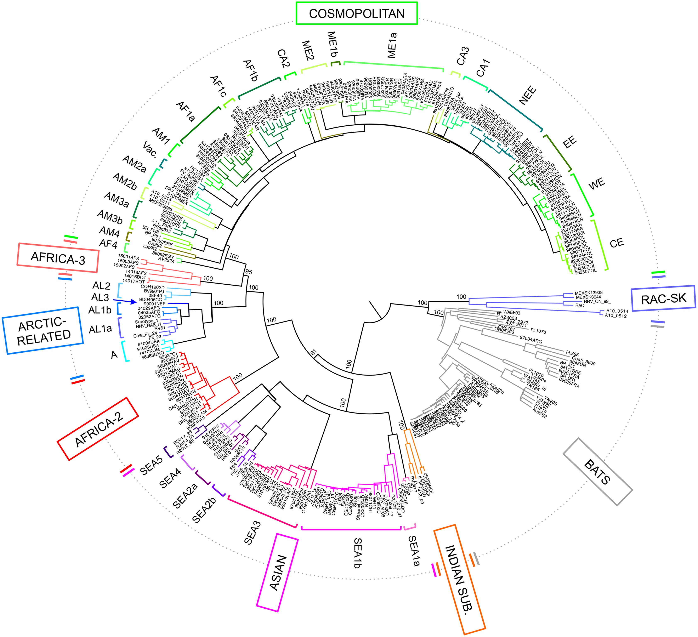
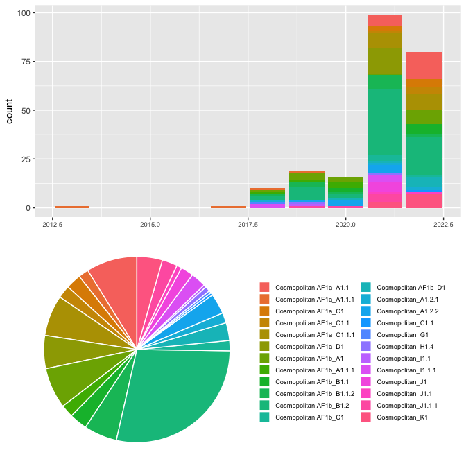

\(~\)
\(~\) \(~\)
This study contains 226 sequences from between 2013 and 2022.This sequence data came from 2 different countries.
| Country | Number of Sequences |
|---|---|
| Kenya | 122 |
| Tanzania | 104 |
Table 1. Numbers of sequences by area.
\(~\) \(~\)
\(~\) \(~\)
Several well-defined RABV clades circulate globally, within two major phylogenetic groups; bat-related and dog-related. The dog-related group is split into 6 different clades according to Troupin et al. (2016). These clades are: Africa 2, Africa 3, Cosmopolitan, Arctic, Asian and Indian. The majority of Nigerian sequences fall within the Africa 2 clade.
 Figure 1. Global rabies clades. Phylogeny of all global rabies clades as defined by Troupin et al. (2016). taken from https://doi.org/10.1371/journal.ppat.1006041
\(~\)
The MAD DOG (Method for Assignment, Definition and Designation Of Global lineages) tool is an updated lineage designation and assignment tool for rabies virus based on the dynamic nomenclature used for SARS-CoV-2 by Rambaut et al. (2020). This tool defines sequences beyond the clade and subclade level, allowing increased definition. Application of this tool can be used to generate detailed information to inform control efforts and monitor progress towards the elimination of rabies virus.
\(~\)
Details of the tool can be found at https://doi.org/10.5281/zenodo.5503916
\(~\)
For more information see: https://doi.org/10.1101/2021.10.13.464180
\(~\) \(~\) A total of 24 lineages have been detected in this study. 16 lineages are included here that have not been seen in this study, but are direct parents of lineages in this study, so are included for relevant evolutionary investigations.There are 25 existing lineages relevant to this study.
| lineage | country | year_first | year_last | n_seqs | parent |
|---|---|---|---|---|---|
| Cosmopolitan AF1a_A1.1 | c(“Algeria”, “Ethiopia”, “Kenya”, “Somalia”) | 1987 | 2018 | 20 | Cosmopolitan AF1a_A1 |
| Cosmopolitan AF1b_A1 | c(“Burundi”, “Rwanda”, “Tanzania”, “Uganda”) | 1990 | 2017 | 16 | Cosmopolitan_A1.2 |
| Cosmopolitan AF1b_A1.1 | c(“Tanzania”, “Uganda”) | 2009 | 2018 | 0 | Cosmopolitan AF1b_A1 |
| Cosmopolitan AF1b_A1.1.1 | Tanzania | 2008 | 2018 | 5 | Cosmopolitan AF1b_A1.1 |
| Cosmopolitan AF1b_B1.1 | Tanzania | 2010 | 2018 | 7 | Cosmopolitan AF1b_B1 |
| Cosmopolitan AF1b_B1.2 | Tanzania | 2011 | 2017 | 64 | Cosmopolitan AF1b_B1 |
| Cosmopolitan AF1b_C1 | Tanzania | 2009 | 2017 | 4 | Cosmopolitan AF1b_A1.1.2 |
| Cosmopolitan_A1.2.1 | c(“South Africa”, “Tanzania”, “Zambia”, “Zimbabwe”) | 1981 | 2017 | 4 | Cosmopolitan_A1.2 |
| Cosmopolitan_A1.2.2 | c(“China”, “France”, “India”, “Japan”, “Kenya”, “Tanzania”) | 1976 | 2018 | 8 | Cosmopolitan_A1.2 |
| Cosmopolitan_C1.1 | c(“South Africa”, “Zimbabwe”) | 1990 | 2017 | 1 | Cosmopolitan_C1 |
| Cosmopolitan_G1 | c(“Kenya”, “Tanzania”) | 2010 | 2018 | 1 | Cosmopolitan_A1.2.2 |
| Cosmopolitan_H1.4 | Israel | 1995 | 2001 | 2 | Cosmopolitan_H1 |
| Cosmopolitan AF1a_A1 | c(“Algeria”, “Italy”, “Morocco”, “Tunisia”) | 1986 | 2018 | 0 | Cosmopolitan_A1 |
| Cosmopolitan AF1b_A1.1.2 | Tanzania | 2003 | 2011 | 0 | Cosmopolitan AF1b_A1.1 |
| Cosmopolitan AF1b_B1 | Tanzania | 2004 | 2012 | 0 | Cosmopolitan AF1b_A1.1.1 |
| Cosmopolitan_A1.2 | c(“Central African Republic”, “Madagascar”, “Tanzania”, “Zimbabwe”) | 1986 | 2017 | 0 | Cosmopolitan_A1 |
| Cosmopolitan_C1 | c(“Mozambique”, “South Africa”, “Zimbabwe”) | 1986 | 2012 | 0 | Cosmopolitan_A1.2.1 |
| Cosmopolitan_H1 | Israel | 1996 | 2004 | 0 | Cosmopolitan_F1.1.1 |
| Cosmopolitan_A1 | c(“Brazil”, “China”, “Gabon”, “Grenada”, “Japan”, “Mexico”, “Nigeria”, “Peru”, “Russia”) | 1931 | 2020 | 0 | Cosmopolitan |
| Cosmopolitan_F1.1.1 | Israel | 1996 | 1998 | 0 | Cosmopolitan_F1.1 |
| Cosmopolitan | NA | NA | 0 | RABV | |
| Cosmopolitan_F1.1 | c(“Israel”, “Jordan”, “Lebanon”) | 1996 | 2004 | 0 | Cosmopolitan_F1 |
| Cosmopolitan_F1 | c(“Israel”, “Turkey”) | 1993 | 2020 | 0 | Cosmopolitan_A1.1.2 |
| Cosmopolitan_A1.1.2 | c(“Iran”, “Israel”, “Turkey”) | 1976 | 2013 | 0 | Cosmopolitan_A1.1 |
| Cosmopolitan_A1.1 | c(“Madagascar”, “Montenegro”, “Serbia”) | 1978 | 2004 | 0 | Cosmopolitan_A1 |
Table 2. Details of lineages relevant to this study. First and last years refer to the first and most recent years the lineage has been detected prior to this study.
There are 15 new lineages identified in this dataset.
| lineage | country | year_first | year_last | n_seqs | parent |
|---|---|---|---|---|---|
| Cosmopolitan_K1 | Tanzania | 2021 | 2022 | 10 | Cosmopolitan_A1.2.1 |
| Cosmopolitan_J1.1.1 | Tanzania | 2019 | 2021 | 6 | Cosmopolitan_J1.1 |
| Cosmopolitan_J1.1 | c(“Kenya”, “Tanzania”) | 2021 | 2022 | 2 | Cosmopolitan_J1 |
| Cosmopolitan_J1 | c(“Kenya”, “Tanzania”) | 2021 | 2021 | 5 | Cosmopolitan_I1.1.1 |
| Cosmopolitan_I1.1.1 | Kenya | 2018 | 2021 | 6 | Cosmopolitan_I1.1 |
| Cosmopolitan_I1.1 | Kenya | 2019 | 2019 | 1 | Cosmopolitan_I1 |
| Cosmopolitan_I1 | c(“Kenya”, “Tanzania”) | NA | NA | 0 | Cosmopolitan_A1.2.2 |
| Cosmopolitan AF1b_D1 | Tanzania | 2020 | 2022 | 7 | Cosmopolitan AF1b_B1.2.1 |
| Cosmopolitan AF1b_B1.2.1 | Tanzania | NA | NA | 0 | Cosmopolitan AF1b_B1.2 |
| Cosmopolitan AF1b_B1.1.2 | Tanzania | 2018 | 2022 | 13 | Cosmopolitan AF1b_B1.1 |
| Cosmopolitan AF1a_D1 | Kenya | 2021 | 2021 | 13 | Cosmopolitan AF1a_C1.1.1 |
| Cosmopolitan AF1a_C1.1.1 | Kenya | 2021 | 2022 | 16 | Cosmopolitan AF1a_C1.1 |
| Cosmopolitan AF1a_C1.1 | Kenya | 2021 | 2022 | 5 | Cosmopolitan AF1a_C1 |
| Cosmopolitan AF1a_C1 | Kenya | 2021 | 2022 | 6 | Cosmopolitan AF1a_A1.1.1 |
| Cosmopolitan AF1a_A1.1.1 | Kenya | 2013 | 2019 | 4 | Cosmopolitan AF1a_A1.1 |
Table 3. Details of new lineages identified in this study. First and last years refer to the first and most recent years the lineage has been detected.
Figure 2. Sunburst plot showing hierarchal relationships of lineages. Bar length corresponds to number of sequences. Plot is interactive. Hover over bars to see details, and click to zoom in on sections.
The sequences span 9 years from 2013 to 2022. The year with the greatest number of sequences is 2021 with 99 sequences.The most prevalent lineage is Cosmopolitan AF1b_B1.2 with 64 sequences.
 \(~\)
Figure 4. Above: Number of sequences per year, with bars split by lineage. Below: Pie chart indicating proportions of lineages.
There are 20 potentially emerging or undersampled lineages within the lineages relevant to this study. This means that these lineages have between 5 and 9 sequences; not enough to be a full lineage, but are significantly diverse from their relatives. With more sequencing and more time, these are likely to become new lineages. Be aware these include ALL emerging or undersampled lineages within the relevant lineages in your dataset; not just your data. This is to show there may be gaps in the data.
| lineage | tips | distance | country | year_first | year_last |
|---|---|---|---|---|---|
| Cosmopolitan AF1a_C1_E1 | 5 | 0.0651110 | Kenya | 2021 | 2022 |
| Cosmopolitan AF1a_C1.1.1_E1 | 5 | 0.0760319 | Kenya | 2021 | 2021 |
| Cosmopolitan AF1a_D1_E1 | 5 | 0.0833940 | Kenya | 2021 | 2021 |
| Cosmopolitan AF1b_B1.1_E1 | 5 | 0.0758750 | Tanzania | 2022 | 2022 |
| Cosmopolitan AF1b_B1.2_E1 | 5 | 0.0739213 | Tanzania | 2011 | 2012 |
| Cosmopolitan AF1b_B1.2_E2 | 5 | 0.0740034 | Tanzania | 2011 | 2015 |
| Cosmopolitan AF1b_B1.2_E3 | 5 | 0.0740034 | Tanzania | 2012 | 2012 |
| Cosmopolitan AF1b_B1.2_E4 | 5 | 0.0748269 | Tanzania | 2016 | 2017 |
| Cosmopolitan AF1b_B1.2_E5 | 5 | 0.0748269 | Tanzania | 2015 | 2017 |
| Cosmopolitan AF1b_B1.2_E6 | 6 | 0.0739264 | c(“Tanzania”, “Kenya”) | 2021 | 2022 |
| Cosmopolitan AF1b_B1.2_E7 | 6 | 0.0741021 | Kenya | 2020 | 2022 |
| Cosmopolitan AF1b_B1.2_E7 | 5 | 0.0741047 | Kenya | 2021 | 2022 |
| Cosmopolitan AF1b_B1.2_E7 | 6 | 0.0750640 | Kenya | 2021 | 2021 |
| Cosmopolitan AF1b_B1.2_E7 | 5 | 0.0749770 | Kenya | 2021 | 2021 |
| Cosmopolitan AF1b_B1.2_E7 | 6 | 0.0751496 | Kenya | 2022 | 2022 |
| Cosmopolitan AF1b_D1_E1 | 5 | 0.0737704 | Tanzania | 2020 | 2022 |
| Cosmopolitan_J1_E1 | 5 | 0.0688091 | Kenya | 2021 | 2021 |
| Cosmopolitan_J1.1.1_E1 | 5 | 0.0702208 | Tanzania | 2013 | 2013 |
| Cosmopolitan_K1_E1 | 5 | 0.0769809 | Tanzania | 2021 | 2022 |
| Cosmopolitan_K1_E2 | 5 | 0.0769809 | Tanzania | 2022 | 2022 |
\(~\) Table 5. Details of potentially emerging or undersampled lineages relevant to this study. First and last years refer to the first and most recent years the lineage has been detected.
There are 11 singletons of interest detected. These reflect highly divergent sequences that could indicate sequencing errors, or the start of new lineages, especially in undersampled areas. Be aware these include ALL singletons of interest within the relevant lineages in your dataset; not just your data. This is to show there may be general gaps in the data.
| lineage | n_singletons | singleton_countries | singleton_years |
|---|---|---|---|
| Cosmopolitan AF1a_D1 | 1 | Kenya | 2021 |
| Cosmopolitan AF1b_D1 | 1 | Tanzania | 2022 |
| Cosmopolitan_A1 | 1 | Mexico | 2020 |
| Cosmopolitan_A1.1.2 | 2 | Iran | 2000 |
| Cosmopolitan_A1.2.1 | 1 | Tanzania | 2021 |
| Cosmopolitan_A1.2.2 | 1 | Japan | 2001 |
| Cosmopolitan_C1 | 1 | South Africa | 2012 |
| Cosmopolitan_C1.1 | 1 | - | 1986 |
| Cosmopolitan_I1.1 | 1 | - | 1995 |
| Cosmopolitan_J1.1 | 1 | Tanzania | 2011 |
\(~\) Table 6. Summary of singletons of interest relevant to this study.
| ID | closest relative | lineage | year | country |
|---|---|---|---|---|
| KT336436 | KT336437 | Cosmopolitan_C1 | 2012 | South Africa |
| U22484 | U22488 | Cosmopolitan_C1.1 | 1986 | - |
| LN001 | KIL1022 | Cosmopolitan_A1.2.1 | 2021 | Tanzania |
| DQ900553 | DQ900554 | Cosmopolitan_I1 | 1998 | Tanzania |
| KR906769 | KR906768 | Cosmopolitan_J1.1 | 2011 | Tanzania |
| U22648 | KX148209 | Cosmopolitan_I1.1 | 1995 | - |
| KX148207 | KX148208 | Cosmopolitan_I1 | 2014 | Kenya |
| DQ900569 | DQ900568 | Cosmopolitan_I1 | 2004 | Tanzania |
| SD818 | SD821 | Cosmopolitan AF1b_D1 | 2022 | Tanzania |
| KU963506 | MG458319 | Cosmopolitan_A1.2.2 | 2001 | Japan |
| OM971005 | LC717419 | Cosmopolitan_A1 | 2020 | Mexico |
| AY854580 | U22841 | Cosmopolitan_A1.1.2 | 2000 | Iran |
| AY854582 | AY854580 | Cosmopolitan_A1.1.2 | 2000 | Iran |
| Z00861875 | Z00861877 | Cosmopolitan AF1a_D1 | 2021 | Kenya |
\(~\) Table 7. Details of individual singletons of interest relevant to this study.